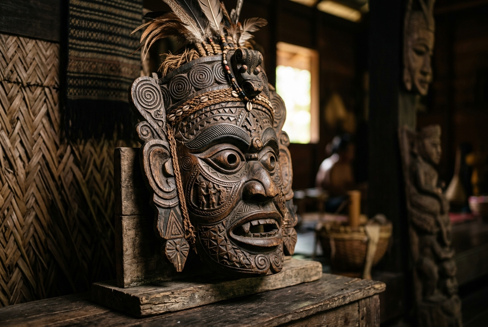
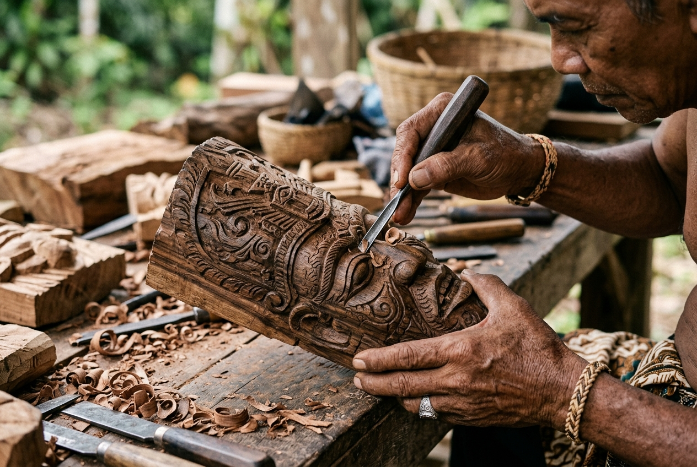

Pulau Carey, Selangor


Kampung Budaya Mah Meri adalah pemukiman suku asli Orang Asli sub-etnis Mah Meri. Suku ini dikenal sebagai "Masked Men of Malaysia". Mereka terkenal akan kemahiran ukiran dan seni pahat topeng kayu berbahan Nyireh Batu, serta tarian ritual Main Jo-oh untuk menghormati roh leluhur dan laut.
Status Kunjungan: Masih sangat sepi dibanding destinasi komersial di wilayah Selangor; memerlukan reservasi khusus dan memberikan pengalaman budaya terisolasi yang autentik.
Kampung ini terletak di Pulau Carey, jauh dari hiruk-pikuk pariwisata massal. Jelajahi peta di bawah ini untuk melihat detail geografisnya.